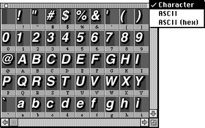

The Character Map window
The Character Map window displays all characters in the font you built and lets you select an individual character for editing in the Character Edit window.

Figure 1: Character Map window.
The pop-up lets you display the ASCII code for each character in either decimal or hexadecimal format, or without ASCII code.